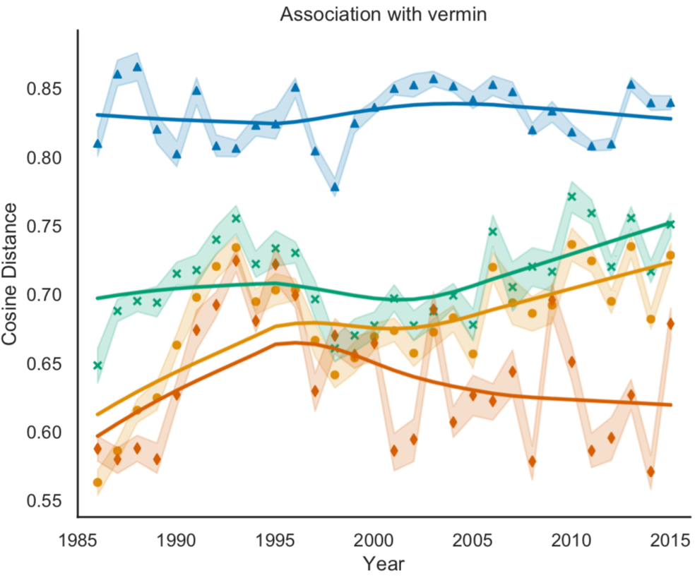

Hi, I'm Julia! I'm a first-year PhD student at the University of Michigan School of Information, advised by David Jurgens and Ceren Budak. I completed my BA in Linguistics (2018) and MS in Computer Science (2019) at Stanford University, where I was advised by Dan Jurafsky. My research interests include natural language processing, sociolinguistics, and computational social science. Here is my academic CV.

A framework for the computational linguistic analysis of dehumanization [in preparation]
Julia Mendelsohn, Yulia Tsvetkov, and Dan Jurafsky
Frontiers in Artificial Intelligence
Paper link forthcoming
The social meaning of diphthong fronting in Berlin German
Stefanie Jannedy, Melanie Weirich, Gediminas Schüppenhauer & Julia Mendelsohn
Phonetik und Phonologie Tagung
Düsseldorf, Germany. September 2019.
Computational linguistic analysis of dehumanization of LGBTQ groups in the media
Julia Mendelsohn
New Ways of Analyzing Variation (NWAV) 47
New York, NY. October 2018.
Poster.
Cross-community variation in onset /l/ among California Latinx speakers
Podesva, R., F. Conover, A. Flores-Perez, C. Gratton, A. Kane, D. Leigh, Julia Mendelsohn, C. Rentie & A. Sprenger
New Ways of Analyzing Variation (NWAV) 46
Madison, WI. November 2017.
Slides.